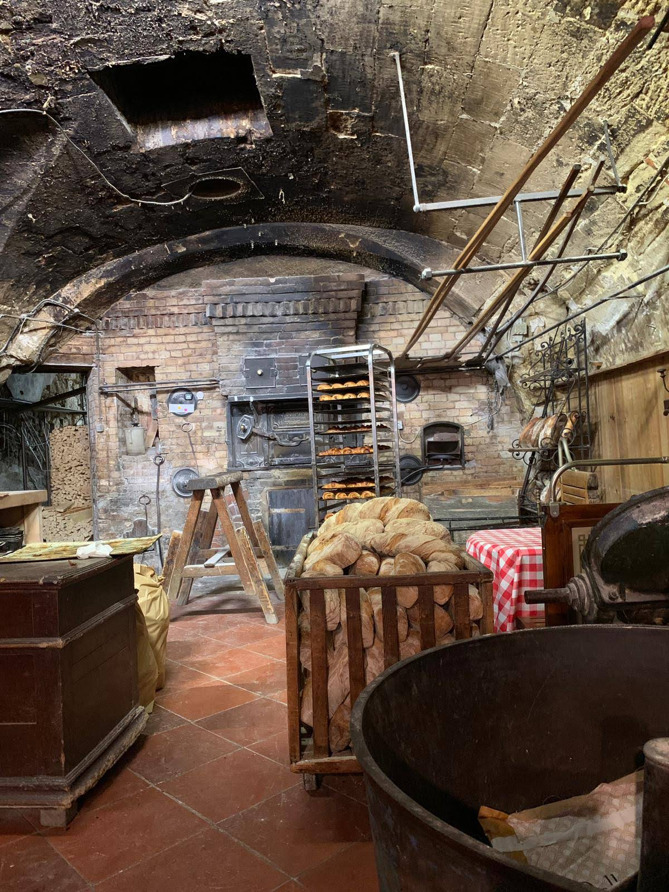
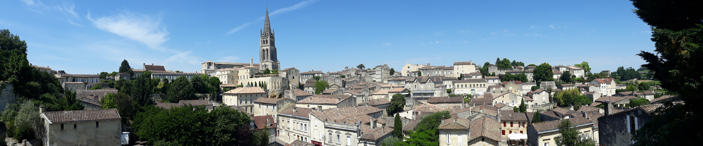

França
Bordeaux
Paradaria incrível, que tinha um toque especial como em Ratatouille, talvez por isso que era tão boa!
Saint-Émilion
Vista do povoado Saint-Émilion, que parece mais com uma pintura.
Paradaria incrível, que tinha um toque especial como em Ratatouille, talvez por isso que era tão boa!
Vista do povoado Saint-Émilion, que parece mais com uma pintura.